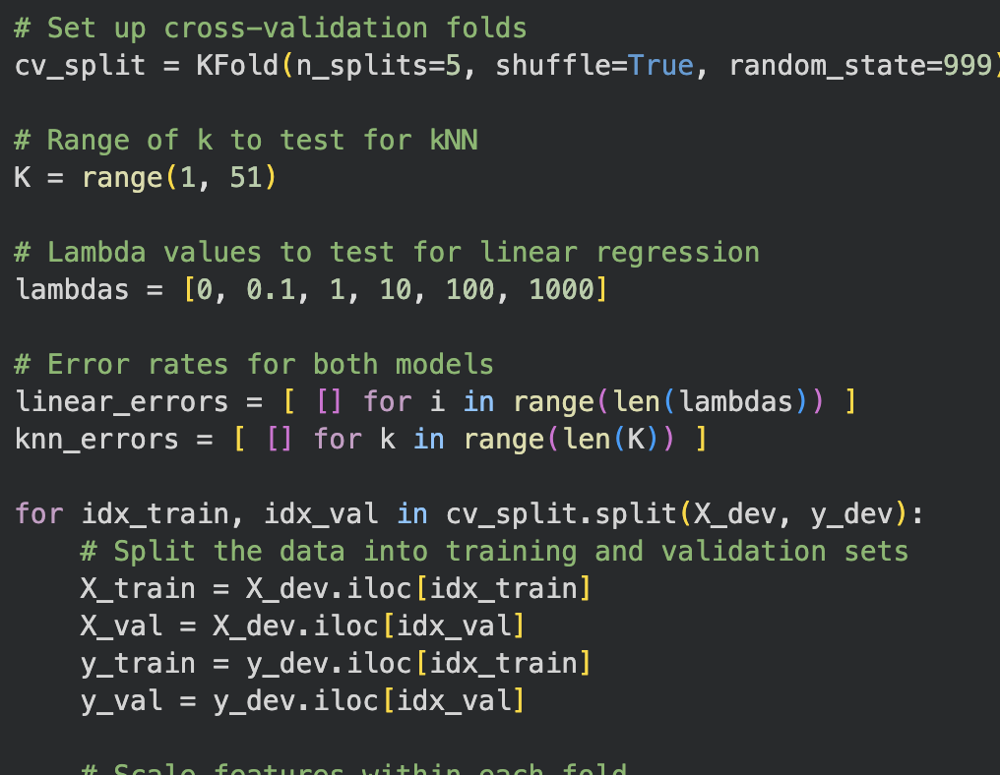
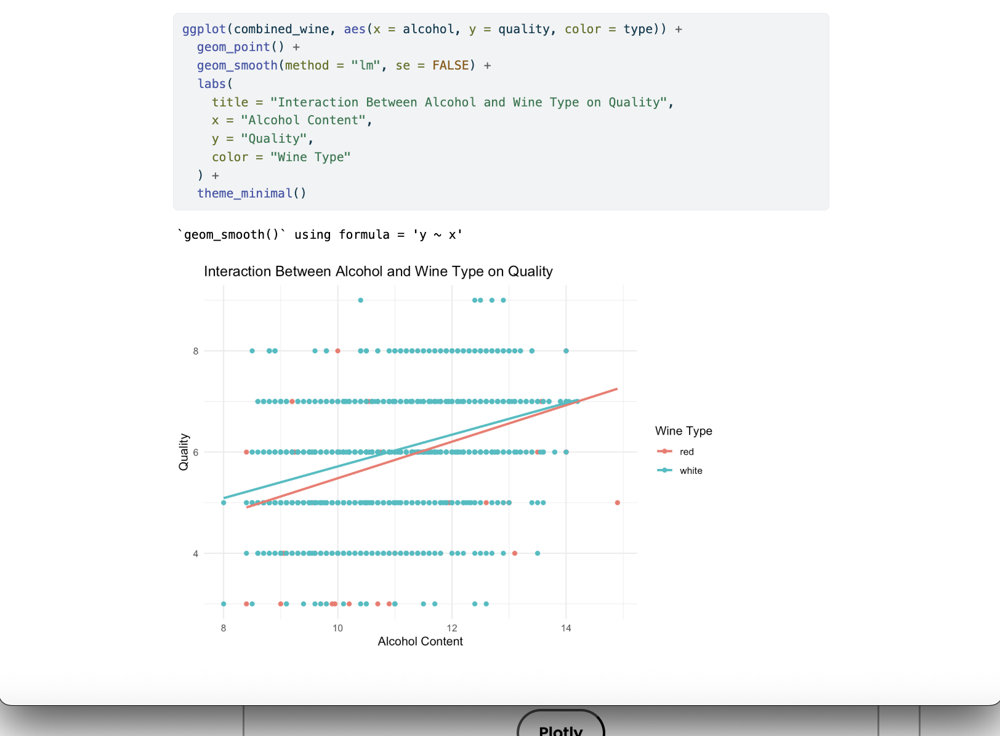
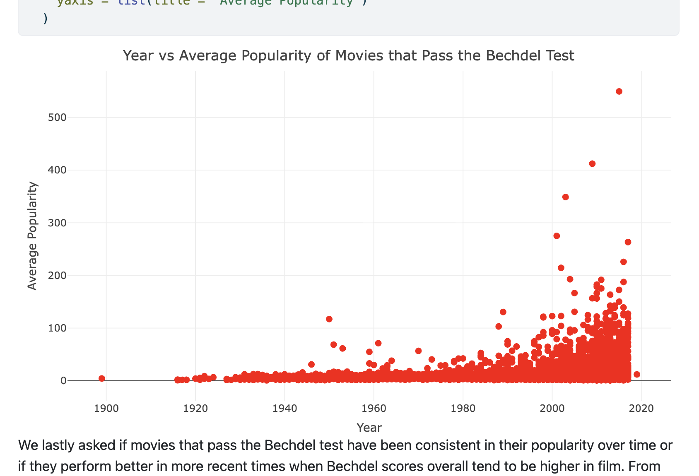
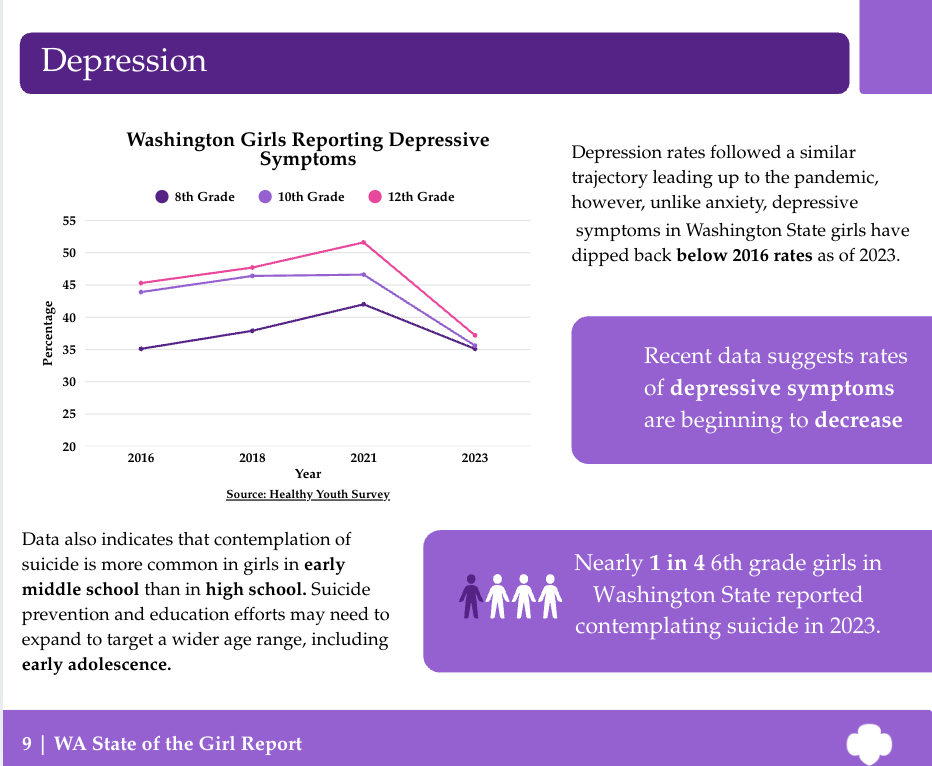
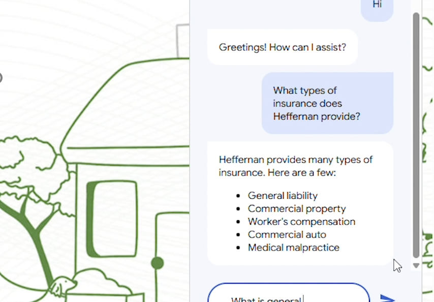
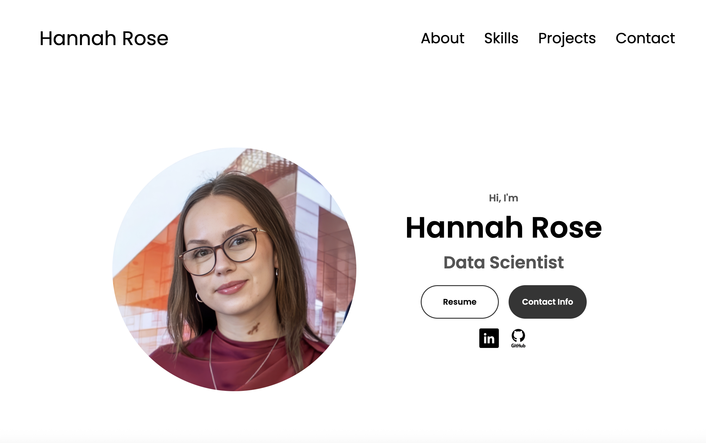

Hi, I'm
Hannah Rose
Data Scientist

Hi, I'm
Data Scientist

B.S. Informatics;
Data Science
University of Washington
Summer 2026

Business Analyst / Data Science Intern
QuieTrack Insurance Services
IT Intern
Heffernan Insurance Brokers
Knitting
Reading
Crosswords
HayDay
Making Jewelry
Loose-Leaf Tea
Hi, I'm Hannah! I'm an Informatics student at the University of Washington on the Data Science track. From exploratory data analysis to machine learning, I love digging deeper into data to uncover useful information that might otherwise go overlooked. I believe that data can be incredibly powerful if you know what to look for, and that's where my primary interest lies.
In my free time, I like to knit (so far I have knit a sweater and a giant shawl!), read (I am always taking book recs: I love thrillers, historical fiction, and memoirs), and do crosswords (so far I can only do up to Thursday of the NYT without cheating but we're getting there), among other things.
Scikit-learn
Tableau, PowerBI, plotly
Design & Management
Pandas, NumPy, dplyr
Python, R
Git, GitHub, GitLab

Using Scikit-learn, pandas, and NumPy, I created a machine learning model to predict the prices of art pieces based on a variety of factors including subject, style, medium, and mood from tabular data. I performed K-Fold Cross-Validation to select between a k-Nearest-Neighbors and Ridge Regression model. I used MSE, MAE, and MRE to evaluated the final model's prediction accuracy and determine whether the model tended to over- or under-predict art prices. I also created visualizations using Plotly, evaluating how the model performed on different price ranges and art styles.

For this project, I used Tidyverse in R to investigate the relationship between alcohol content, wine type, and wine quality ratings using a dataset from the UCI Machine Learning Repository. I prepared and joined separate datasets for red and white wines and performed an exploratory data analysis with scatterplots and boxplots. For my analysis, I fitted a simple linear regression model to model the relationship between alcohol content and quality for red wine, and a multiple linear regression model to determine if the impact of alcohol content depended on the type of wine. I then calculated a 95% confidence interval to quantify the relationship. The results revealed a statistically significant correlation between alcohol content and wine quality for both wine types.

The Bechdel Test, coined by artist Alison Bechdel, is a popular measure of gender representation in movies and other media. To fully pass the test, a work must meet three criteria: It must have at least two named women characters, the women must talk to each other at least once, and their conversation must be about something other than a man. There are a surprising number of movies that actually don't pass the Bechdel test (including the Lord of the Rings trilogy, Avatar, Finding Nemo, and the Princess Bride, to name a few). I was curious how the number of movies that pass this test may have changed over time and whether it impacted movie popularity, so I performed an exploratory data analysis in R, joining two datasets: one with over 200K Letterboxd reviews, and another with a list of movies passing the Bechdel Test. The analysis revealed a dramatic increase in movies that pass the Bechdel Test over time, although there did not appear to be a significant correlation between Bechdel Test scores and movie popularity.

Girl Scouts of Western Washington, WMarketplace
For my capstone, I'm working in a team of five to create the first Washington State of the Girl Report, sponsored by the Girl Scouts of Western Washington and WMarketplace. Our goal is to provide an overview of what girls need most in Washington state in order to guide policy, funding, and programming decisions. So far, our team has performed a comprehensive data review, researching how girls are doing in five main categories: physical health, emotional health, social wellness, academic and career readiness, and safety. We're currently in the process of creating our comprehensive data report to be distributed statewide and iterating on our product to ensure we're capturing the most important issues girls are facing today.

Heffernan Insurance Brokers
During my internship with Heffernan Insurance Brokers, I led a four-person group in designing and piloting a custom customer support chatbot to their company website using Google DialogFlow. I performed a competitive analysis on several chatbot platforms, evaluated client use cases, and designed and developed the chatbot based on stakeholder requirements. As project manager, I coordinated team meetings, ensured deliverables were completed on time, led the development process, and presented our result and recommendations for rollout to company executies.

Woah, meta!
I figured it would be wayyyy cooler to be able to say that I built my portfolio website on my own than to be boring and use a website builder. I am definitely no web developer, but I was able to use the skills I gained from my Client Side Development class to build this portfolio website with some basic HTML, CSS, and JavaScript. I managed version control with GitHub and deployed the website using CloudFlare. In total, this only took me about 2 days! Not too shabby, if I say so myself.
Get in Touch